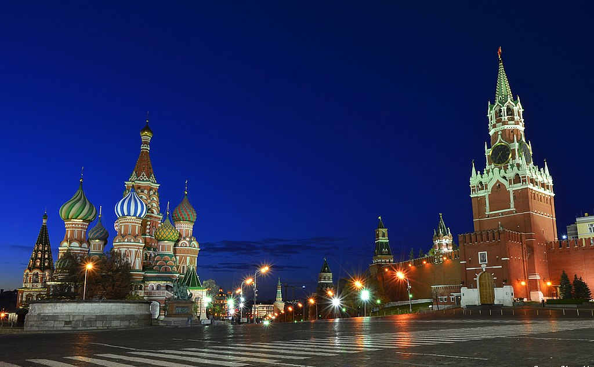

Красная площадь — главная площадь Москвы, расположенная в центре радиально-кольцевой планировки города между Московским Кремлём (к западу) и Китай-городом (на восток). Также неофициально является главной площадью страны. От площади к берегу Москвы-реки ведёт покатый Васильевский спуск.
Площадь расположена вдоль северо-восточной стены Кремля, между Кремлёвским проездом, проездом Воскресенские Ворота, Никольской улицей, Ильинкой, Варваркой и Васильевским спуском к Кремлёвской набережной. Выходящие с площади улицы далее разветвляются и вливаются в основные магистрали города, ведущие в разные концы России.
На площади расположены Лобное место, памятник Минину и Пожарскому, Мавзолей В. И. Ленина, рядом с которым располагается Некрополь у Кремлёвской стены, где захоронены деятели (в основном политические и военные) Советского государства. К западу от площади находится Московский Кремль, к востоку — Верхние (ГУМ) и Средние торговые ряды, к северу — Исторический музей и Казанский собор, к югу — Храм Василия Блаженного (Покровский собор). Уникальный архитектурный ансамбль площади состоит под охраной ЮНЕСКО как памятник Всемирного наследия.
Площадь, вымощенная брусчаткой из крымского долерита, является пешеходной зоной. Автомобильное движение по площади запрещено с 1963 года. Также действует запрет на передвижение на велосипедах и мопедах. Общая длина Красной площади — 330 метров, ширина — 75 метров, площадь 24 750 м².